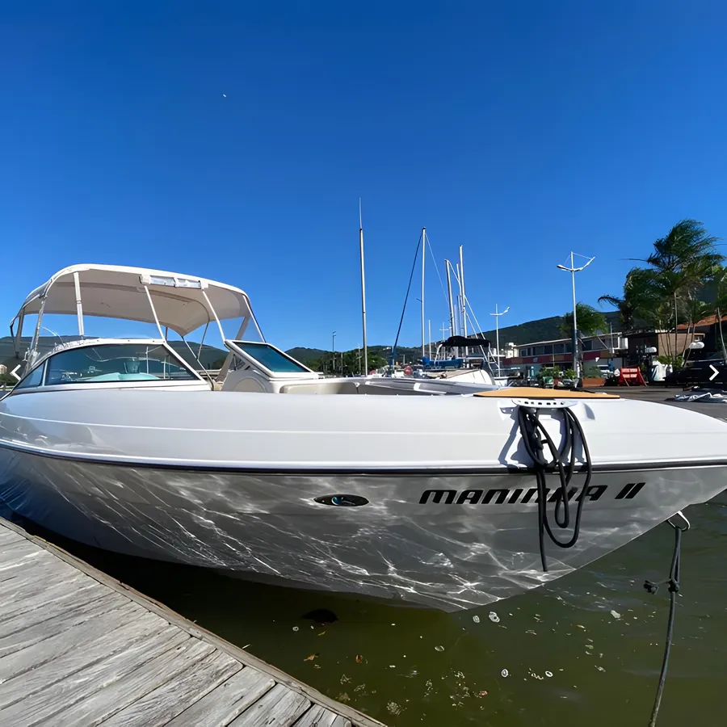
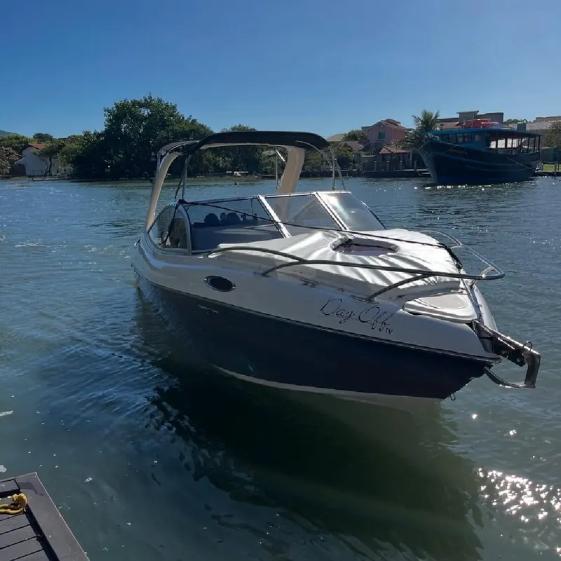

O que tem a bordo
Itens desta lancha, informados pelo dono. Marinheiro e combustível do roteiro já estão no valor.
- Marinheiro habilitado
- Combustível do roteiro
- Coletes e itens de segurança
- Popa Aberta e espaçosa
- Banheiro
- Som sistema Bluetooth
- Churrasqueira a carvão
- Toldo rebatível
- Ducha de popa
- Sistema de iluminação
- Mesa
- Geladeira Térmica
- Pia com água doce
- Boias flutuação
Para onde a Focker 24 vai
Os dois roteiros saem com a mesma lancha. A diária é de 7 horas, das 10h às 17h.

Lanchas para grupos parecidos
-
 Leste da Ilha
Phantom 24 Horus
7 pessoas24 pés
Leste da Ilha
Phantom 24 Horus
7 pessoas24 pés- Cabine
- Banheiro
- Churrasqueira
- +1 item: Tapete flutuante
-

Leste da Ilha Phantom 23.5 M 7 pessoas23,5 pés- Banheiro
- Churrasqueira
- Som
- +4 itens: Geladeira, Ducha, Toldo, Mesa e louças
-
 Leste da Ilha
Phantom 23.5 G
7 pessoas23,5 pés
Leste da Ilha
Phantom 23.5 G
7 pessoas23,5 pés- Banheiro
- Churrasqueira
- Som
- +5 itens: Tapete flutuante, Geladeira, Ducha, Toldo, Mesa e louças
-

Leste da Ilha FS 230 7 pessoas23 pés- Cabine
- Banheiro
- Churrasqueira
- +3 itens: Som, Tapete flutuante, Geladeira